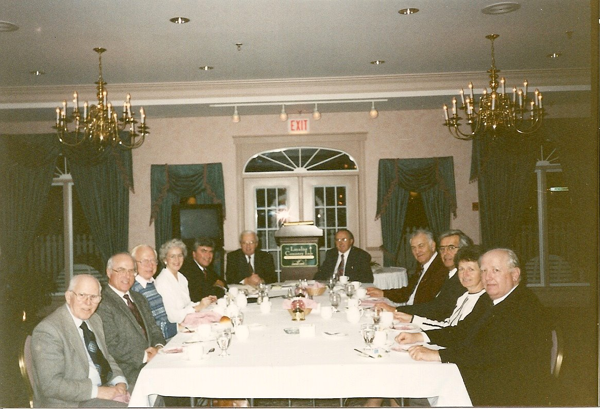

No. 99 July 17, 2009
A Brief History
In the spring of 1986, members of the Charlottetown Rotary Club heard a presentation from a founding member of the Greater Moncton Area Community Foundation. He was a passionate believer and had committed $10,000 per year for ten years to its establishment.
Some Rotarians (Stan MacPherson, Bob Hutchison, Walt Wheeler, Stuart Drummond and Tom DeBlois), also members of the Executive of the United Way of PEI, decided to explore moving the idea further. Bob Hutchison, on behalf of the group, asked Don Glendenning to take a look at the idea
As part of the information gathering process, Glendenning reviewed the literature, talked to knowledgeable people, contacted 9 US based foundations, contacted 20 Canadian foundations and consulted formally and informally with 32 people of the community including, as I recall, three meetings held in the lecture theatre of Holland College.
During the review process I learned that the concept of a community foundation was significantly different from other charitable organizations. The distinguishing features of community foundations include the following
-focus on endowments with restricted use of the principal;
-gifts accepted according to a common set of conditions;
-distribution of funds is the sole responsibility of a governing body;
-the use of funds could be changed by the governing body when circumstances made the original conditions impractical, undesirable, unnecessary or impossible;
-funds were intended to serve the community and there would be an annual public report.
Definition: A community foundations is a non-governmental, non-profit organization with funds and programs managed by its own trustees or directors, established to maintain or aid social, educational, charitable, religious or other activities serving the common welfare primarily through making grants.
Statistics show the first community foundation was established in Cleveland, Ohio in 1914 and the first
community foundation was established in Canada in Winnipeg in 1921. Today there are 160 community
foundations in Canada and the movement has extended around the world.
The Glendenning report concluded that there was a niche, such a foundation should serve all PEI and the key to success would be a highly respected Board.
The Report recommended that the idea be implemented, a nominating committee be struck to include the Mayors of Charlottetown and Summerside, the Chair of the United Way, and the Chief Justice of the Supreme Court of PEI; an interim Board of five community leaders be approached; start-up funds be solicited, and the services of a part-time Executive Director be solicited.
The Nominating Committee included Chief Justice Norman Carruthers as Chair, Mayor Jack Ready and Mayor Basil Stewart. (The latter invited Paul H. Schurman to act on his behalf)
The Community Foundation of Prince Edward Island was incorporated in January, 1993 and included Tom Davies as Chair, Mary Wilcox as Secretary, Stan McPherson as Treasurer and Paul Schurman as Vice Chair; other members included Don Glendenning, Aquinas Ryan, Connie Ings, Herb Leavitt, Dr. Ulric Poirier and Peggy Coady.

An early Board meeting in Summerside with Robert Dutcher, Executive Director of the Greater Moncton Community Foundation, as speaker.